Chaoran Feng（冯超然）
Master StudentSchool of Electronics and Computer EngineeringPeking University
Shenzhen, China

🎓 I am currently seeking Fall 2027 Ph.D. opportunities and full-time positions. I warmly welcome potential advisors, collaborators, and employers to contact me at chaoran.feng@stu.pku.edu.cn.
🔬 Research Interests
I work in the fields of Multimodal Generation and 3D Vision, supervised by Prof. Li Yuan and Prof. Yonghong Tian at YuanGroup, Peking University. I strive to develop impactful research projects. Now, I focus on the following topics:
- Multimodal Generation
- Agentic AI
- Video Generation with 3D Priors
🎓 Education
- 2024–2027 M.S. in Computer Science, School of Electronics and Computer Engineering, Peking University. Advised by Prof. Li Yuan and Prof. Yonghong Tian.
- 2020–2024 B.E. in Artificial Intelligence, School of Future Technology, Dalian University of Technology.
📰 News
- [2026-07] 🔥 We release "LingBot-Video", a large-scale MoE video foundation model for embodied intelligence with post-training reward and RL alignment.
- [2026-02] Two papers are accepted by CVPR 2026, Style-GRPO and SpatialT2I.
- [2025-11] Two papers are accepted by AAAI 2026, "NeuralGS" and "Next Patch Prediction".
- [2025-09] A paper is accepted by NeurIPS 2025, "GS2E".
- [2025-07] A paper is accepted by ACM MM 2025, "E-4DGS".
- [2025-06] Two papers are accepted by ICCV 2025, "EvaGaussians" and "Tune-Your-Style".
- [2025-03] 🔥 We release "NeuralGS", a novel framework that effectively adopts the neural field representation to encode the attributes of 3D Gaussians with multiple tiny MLPs.
- [2025-01] 🔥 We release "AE-NeRF", a novel framework for 3D reconstruction using event streams under noisy poses and in unbounded larger scenes.
- [2024-12] Two papers are accepted by AAAI 2025.
- [2024-05] 🔥 We release "EvaGaussians", the first approach that reconstructs sharp static 3D scenes with sparse RGB frames and event streams.
🗂️ Selected Research Papers
* Equal contribution # Project lead
🎨 Style-GRPO: Semantic-Aware Preference Optimization for Image Style Transfer Guided by Reward Modeling
A novel framework for image style transfer using semantic-aware preference optimization guided by reward modeling.
CVPR 2026
Paper
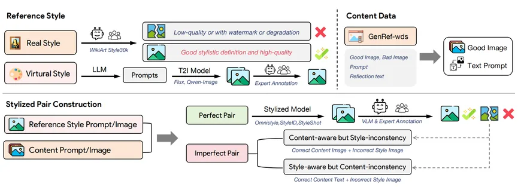
👹 Enhancing Spatial Understanding in Image Generation via Reward Modeling
A novel framework for enhancing spatial understanding in image generation via reward modeling.
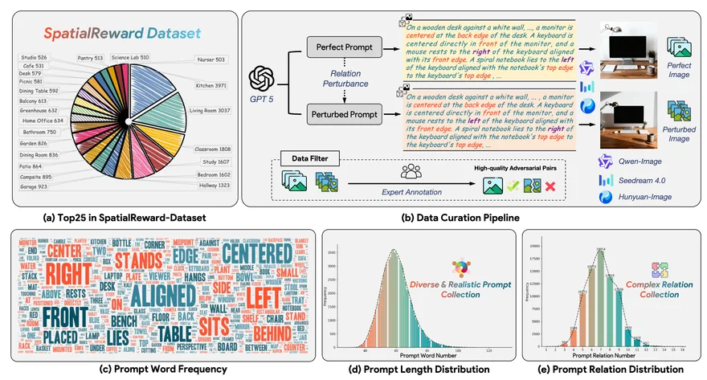
🍟 WISE: A World Knowledge-Informed Semantic Evaluation for Text-to-Image Generation
The first benchmark for evaluating world-knowledge-informed semantic understanding in text-to-image generation, with 1,000 prompts across cultural common sense, spatio-temporal reasoning, and natural science.
🌍 WorldCrafter: Consistent Video World Model with Implicit 3D-aware Memory
A video world model with camera-queryable implicit 3D-aware memory, enabling consistent, camera-controlled scene exploration from a single image or text prompt across viewpoints and over long horizons.
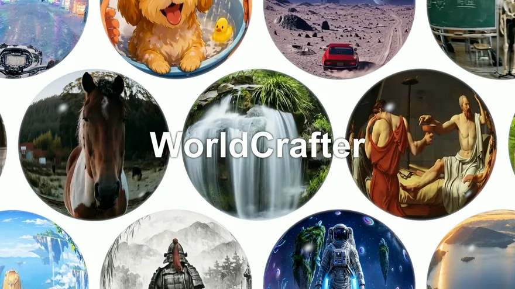
👾 EA3D: Event-Augmented 3D Diffusion for Generalizable Novel View Synthesis
An Event-Augmented 3D Diffusion framework for generalizable novel view synthesis from event streams and sparse RGB inputs.
ICLR 2026
Paper
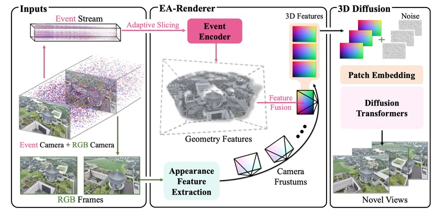
🌫️ DeblurNVS: Geometric Latent Diffusion for Novel View Synthesis from Sparse Motion-Blurred Images
A geometric latent diffusion framework for high-fidelity novel view synthesis directly from sparse motion-blurred images without per-scene optimization.
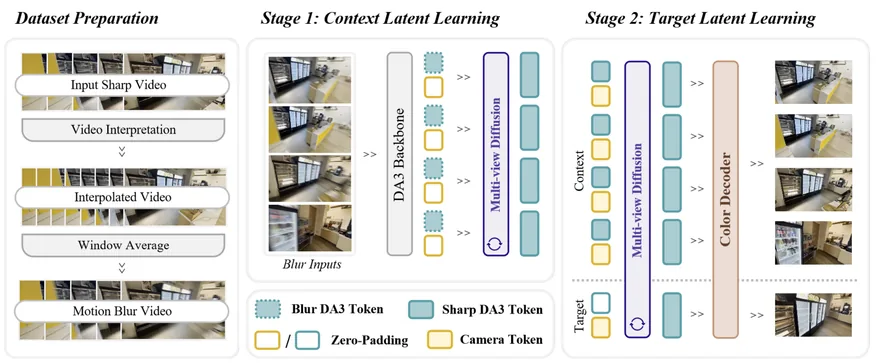
🍿 Breaking the Vicious Cycle: Coherent 3D Gaussian Splatting from Sparse and Motion-Blurred Views
A novel framework for coherent 3D Gaussian Splatting from sparse and motion-blurred views using physics-aware deblurring priors coupled with diffusion-driven geometry completion.
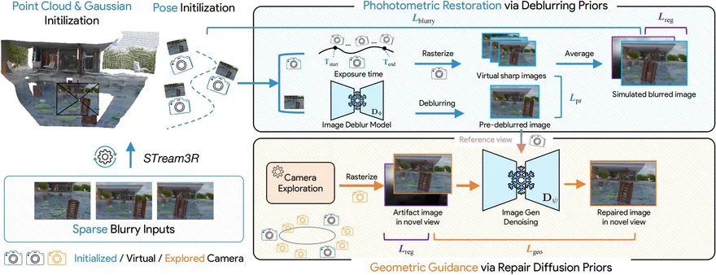
🎨 Tune-Your-Style: Intensity-tunable 3D Style Transfer with Gaussian Splatting
A novel style transfer framework with 3D Gaussian Splatting.
ICCV 2025
Paper
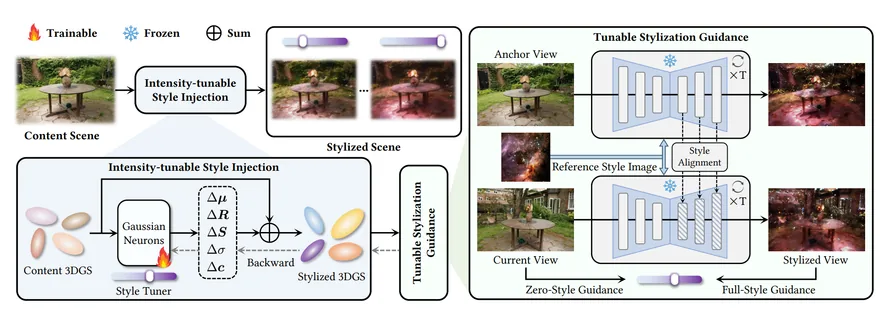
🔥 Cycle3D: High-quality and Consistent Image-to-3D Generation via Generation-Reconstruction Cycle
The project is about 3D generation using a generation-reconstruction cycle for a unified diffusion process.
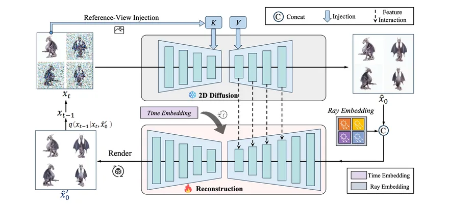
🌀 NeuralGS: Bridging Neural Fields and 3D Gaussian Splatting for Compact 3D Representations
A novel framework using neural fields to encode 3D Gaussians with compact MLPs for large-scale scenes.
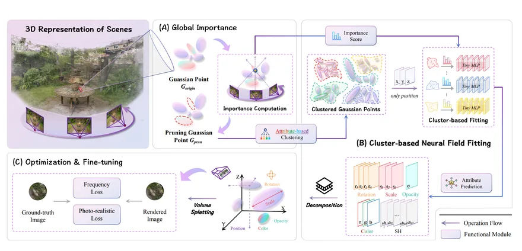
👤 NOFA++: Tuning-free NeRF-based One-shot Facial Avatar Reconstruction
One-shot 3D facial avatar reconstruction with high fidelity and dynamic reenactment from a single image.
IEEE T-CSVT
Paper
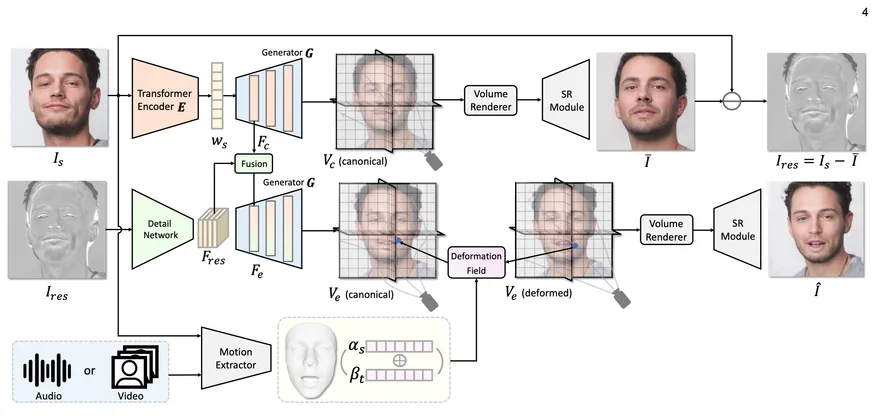
🍡 GS2E: Gaussian Splatting is an Effective Data Generator for Event Stream Generation
The large-scale event dataset and a novel pipeline to simulate the event stream with 3DGS.
🎈 E-4DGS: High-Fidelity Dynamic Reconstruction from the Multi-view Event Cameras
A novel framework to reconstruct high-fidelity scenes with fast-motion event cameras.
ACM MM 2025
Paper
✨ EvaGaussians: Event Assisted Gaussian Splatting from Blurry Images
Event-assisted 3D reconstruction from blurry images with noisy poses and dynamic scenes.
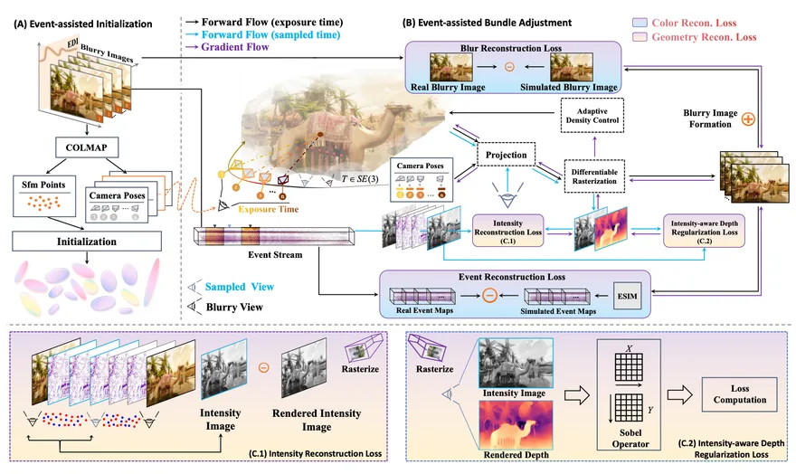
⚡ AE-NeRF: Augmenting Event-Based Neural Radiance Fields for Non-ideal Conditions and Larger Scenes
3D reconstruction with event streams under noisy poses and unbounded scenes.
AAAI 2025
Paper
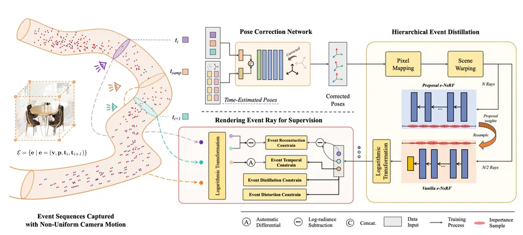
🛠️ Projects
🤖 LingBot-Video: Scaling Mixture-of-Experts Video Pretraining for Embodied Intelligence
A DiT-based MoE video pretraining paradigm tailored for embodied intelligence. Contributed post-training reward design and the RL framework for physical rationality and task completion alignment.
🌐 UniWorld-View: Large-Baseline View Synthesis via Video Diffusion Models
A unified visual world model for controllable large-baseline novel view synthesis from monocular images or videos, combining occlusion-aware 3D point-cloud guidance with video diffusion for precise camera control and geometrically consistent generation.
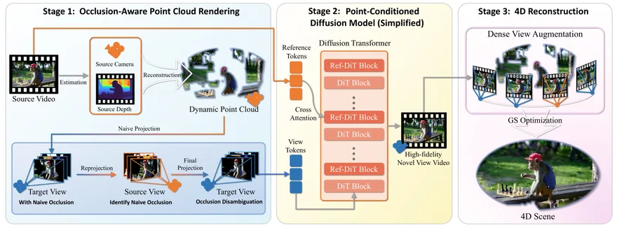
💼 Experience
Research Intern, Horizon Robotics
Jan. 2025 - Jul. 2025
Hosted by Yanfeng Zhao
📝 Blog
🏆 Awards
- 2026.09 National Scholarship, Peking University
- 2025.09 Ping'an Scholarship, Peking University
- 2024.06 Outstanding Graduate (Top 3%), Dalian University of Technology
- 2022.10 Qubochuan Scholarship (Top 10 Recipients/Year), Dalian University of Technology
- 2021–2023 National Scholarship, Dalian University of Technology
- 2021–2023 Academic Excellence Scholarship, Dalian University of Technology
🧑💻 Professional Activities
- Conference Reviewer: ICLR[25-26], CVPR[25-26], ICCV[25], NeurIPS[24-25], AAAI[25-26], IJCAI[25], ACM MM[25]
- Journal Reviewer: T-PAMI, T-CSVT